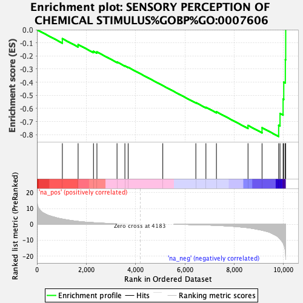
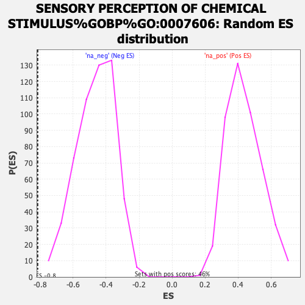

| | | Dataset | CRC_ranked_genelist.rnk |
| Phenotype | NoPhenotypeAvailable |
| Upregulated in class | na_neg |
| GeneSet | SENSORY PERCEPTION OF CHEMICAL STIMULUS%GOBP%GO:0007606 |
| Enrichment Score (ES) | -0.8138686 |
| Normalized Enrichment Score (NES) | -1.7539175 |
| Nominal p-value | 0.0 |
| FDR q-value | 0.09833933 |
| FWER p-Value | 0.749 |
Table: GSEA Results Summary

Fig 1: Enrichment plot: SENSORY PERCEPTION OF CHEMICAL STIMULUS%GOBP%GO:0007606
Profile of the Running ES Score & Positions of GeneSet Members on the Rank Ordered List
| SYMBOL | RANK IN GENE LIST | RANK METRIC SCORE | RUNNING ES | CORE ENRICHMENT | | 1 | CALHM3 | 1030 | 3.301 | -0.0684 | No |
| 2 | ADCY3 | 1669 | 1.808 | -0.1132 | No |
| 3 | ITPR3 | 2292 | 1.005 | -0.1647 | No |
| 4 | C5AR1 | 2432 | 0.871 | -0.1695 | No |
| 5 | CNGB1 | 3247 | 0.394 | -0.2463 | No |
| 6 | AZGP1 | 3566 | 0.243 | -0.2754 | No |
| 7 | GNAT2 | 3698 | 0.166 | -0.2867 | No |
| 8 | GNAT3 | 5103 | 0.000 | -0.4261 | No |
| 9 | CALHM1 | 6443 | -0.315 | -0.5559 | No |
| 10 | GPR148 | 6852 | -0.498 | -0.5913 | No |
| 11 | BEST2 | 7278 | -0.755 | -0.6257 | No |
| 12 | BBS4 | 8559 | -2.237 | -0.7299 | No |
| 13 | GNAS | 9128 | -3.827 | -0.7470 | Yes |
| 14 | CA6 | 9802 | -8.267 | -0.7290 | Yes |
| 15 | DRD2 | 9857 | -9.301 | -0.6390 | Yes |
| 16 | CD36 | 9982 | -11.863 | -0.5295 | Yes |
| 17 | CST2 | 10009 | -12.869 | -0.4001 | Yes |
| 18 | CST4 | 10073 | -17.325 | -0.2286 | Yes |
| 19 | CST1 | 10088 | -22.410 | -0.0000 | Yes |
Table: GSEA details [plain text format]

Fig 2: SENSORY PERCEPTION OF CHEMICAL STIMULUS%GOBP%GO:0007606: Random ES distribution
Gene set null distribution of ES for SENSORY PERCEPTION OF CHEMICAL STIMULUS%GOBP%GO:0007606